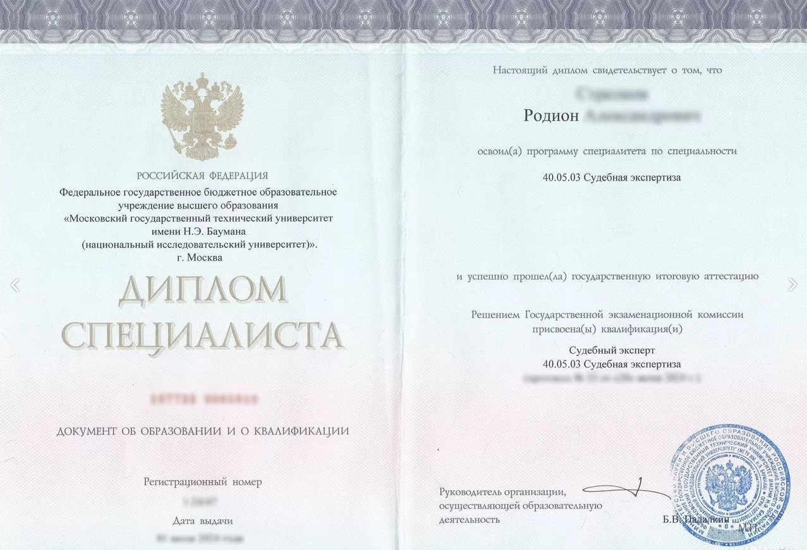
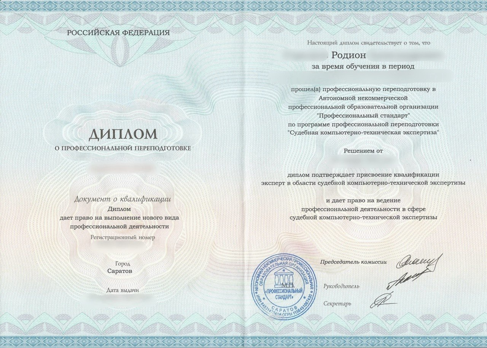
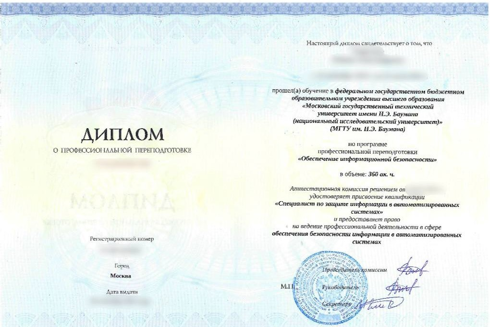

Судебная экспертиза
Высшее образование, специализация «Инженерно-технические экспертизы», квалификация «Судебный эксперт».
Об эксперте
Судебный эксперт с профильным высшим техническим образованием. Лично исследую объекты, формулирую выводы и отвечаю за содержание подписанного заключения.

Основное образование
Специальность 40.05.03 «Судебная экспертиза», специализация «Инженерно-технические экспертизы», квалификация «Судебный эксперт».
Подтверждённые компетенции
Реквизиты документов об образовании предоставляются суду или заказчику вместе с информационным письмом по конкретному исследованию.
Высшее образование, специализация «Инженерно-технические экспертизы», квалификация «Судебный эксперт».
Подготовка в сфере защиты информации в автоматизированных системах.
Квалификация эксперта в области судебной компьютерно-технической экспертизы.
Исследование цифровых фото- и видеоматериалов, записей и сравнительных образцов.
Квалификация судебного эксперта, эксперта-лингвиста.
Авторские и смежные права, товарные знаки, патенты и иные результаты интеллектуальной деятельности.
Промышленные непродовольственные товары, мебель, техника, одежда и отдельные категории продовольственных товаров.
Квалификация контрактного управляющего, специалиста-эксперта в сфере закупок.
Исследование ИИ-генеративного контента, алгоритмов машинного обучения и нейросетевых технологий.
Документы
На сайте размещены копии из переданного архива. Персональные реквизиты на изображениях скрыты; полные сведения предоставляются суду или заказчику по конкретной задаче.

Диплом специалистаМГТУ им. Н. Э. Баумана · Судебная экспертиза
Компьютерно-техническая экспертизаДокумент о профессиональной переподготовке
Информационная безопасностьМГТУ им. Н. Э. Баумана · Защита информации Moscow Forensics DayУчастие в профессиональной конференции
Moscow Forensics DayУчастие в профессиональной конференцииСудебная компьютерно-техническая экспертиза; товароведная оценка качества товаров на этапах товародвижения, хранения и реализации.
Участник Moscow Forensics Day 2024 и 2025 — отраслевой конференции по судебной экспертизе и криминалистике.
Сведения об эксперте включены в единый реестр судебных экспертов Российской Федерации. Номер записи 770503004.
Для суда и юриста
Направьте вопросы, определение суда или краткое описание дела. Подготовлю сведения о компетенции, сроке, стоимости и необходимых материалах.
Запросить письмоПредварительная оценка
Направьте материалы и предполагаемые вопросы. Сообщу, возможно ли исследование, что потребуется, срок и стоимость.